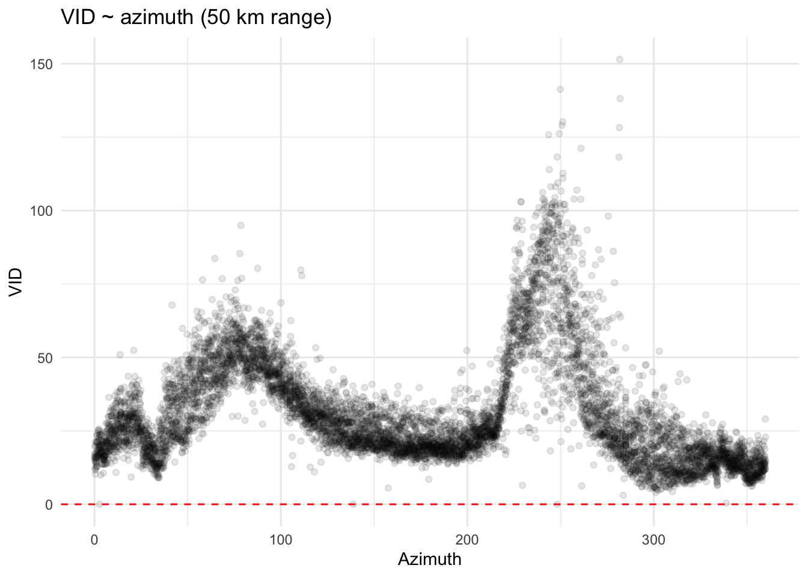
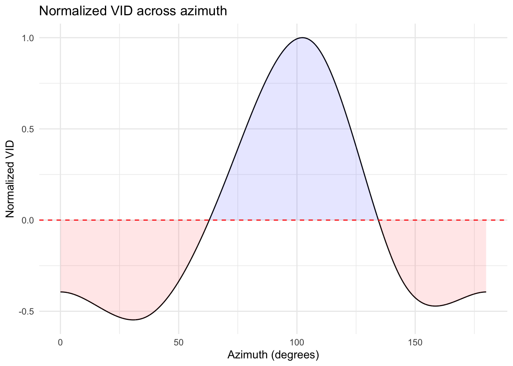

1 Azimuth effect correction
1.1 Collect vertical profile statistics
Use integrate_profile() to store density vid and direction dd from each vertical profile of the composite.
Code
vp_stat_list <- vector("list", length(matching_vp_files))
names(vp_stat_list) <- names(matching_vp_files)
for (i in 1:length(matching_vp_files[1])) { #just run the first composite for now
for (j in 1:length(matching_vp_files[[i]])) {
tryCatch({
#print(paste("Processing file", j, "in list", i))
filename <- paste0('vp/KCYS/', basename(matching_vp_files[[i]][j]))
my_vp <- read_vpfiles(filename)
if (!is.null(my_vp)) {
vp_stat_list[[i]]$vid[[j]] <- integrate_profile(my_vp)$vid
vp_stat_list[[i]]$dd[[j]] <- integrate_profile(my_vp)$dd
}
rhdf5::h5closeAll()
}, error = function(e) {
# Error handling
cat("Error in processing file", j, "in list", i, ": ", e$message, "\n")
})
}
}
vp_df_list <- list()
for (composite_name in names(vp_stat_list)[1]) { #just run the first composite for now
stats <- vp_stat_list[[composite_name]]
if (length(stats$vid) > 0 && length(stats$dd) > 0) {
df <- data.frame(
vid = unlist(stats$vid),
dd = unlist(stats$dd),
stringsAsFactors = FALSE
)
vp_df_list[[composite_name]] <- df
} else {
vp_df_list[[composite_name]] <- data.frame(vid = numeric(0), dd = numeric(0))
}
}
names(vp_df_list)## [1] "KCYS_week18_3_V3_25_mean_composite_ppi.Rds"## vid dd
## 1 1.7774323 23.62349
## 2 15.4680741 19.95190
## 3 0.0000000 NaN
## 4 0.9298482 148.40078
## 5 2.3737285 318.24930
## 6 20.9692553 327.144421.2 Compute mean ground speed direction
Adjust dd angles by adding 360° to values less than 180° to handle the circular nature of azimuths, then convert degrees to radians. Obtain weighted cosine and sine using vid, then use atan2() to calculate the mean angle in radians. After converting back to degrees, use the mean angle as the reference_angle in the following step.
Code
for (name in names(vp_df_list)) {
df <- vp_df_list[[name]]
df <- na.omit(df) #remove rows with NA values
#adjust for circular statistics to avoid problems at 0/360
df$dd_adjusted <- ifelse(df$dd < 180, df$dd + 360, df$dd)
df$radians <- df$dd_adjusted * pi / 180
weighted_cos <- sum(cos(df$radians) * df$vid) / sum(df$vid)
weighted_sin <- sum(sin(df$radians) * df$vid) / sum(df$vid)
mean_angle_radians <- atan2(weighted_sin, weighted_cos)
mean_angle_degrees <- mean_angle_radians * 180 / pi
mean_angle_degrees <- ifelse(mean_angle_degrees < 0, mean_angle_degrees + 360, mean_angle_degrees)
results <- list(mean_angle_degrees = mean_angle_degrees)
vp_df_list[[name]] <- list(data = df, stats = results)
}
vp_df_list[[1]]$stats$mean_angle_degrees## [1] 345.04611.3 Compute relative azimuth
The mean direction of bird movement - the reference angle - now serves as 0°. To calculate relative azmiuth for each grid cell, adjust its original azmiuth by the reference angle. Add relative_azimuth to the ppi object.
Code
#radar location
lon=my_vp$attributes$where$lon
lat=my_vp$attributes$where$lat
add_azimuth_degrees <- function(spatial_grid, lon, lat, reference_angle = 0) {
if (!inherits(spatial_grid, "SpatialGridDataFrame")) {
stop("Input must be a SpatialGridDataFrame.")
}
#convert input degrees to radians
lon_center = lon * pi / 180
lat_center = lat * pi / 180
coords <- coordinates(spatial_grid)
lon_coords = coords[, 1] * pi / 180
lat_coords = coords[, 2] * pi / 180
azimuth_radians <- atan2(sin(lon_coords - lon_center),
cos(lat_center) * tan(lat_coords) - sin(lat_center) * cos(lon_coords - lon_center))
azimuth_degrees <- azimuth_radians * 180 / pi
spatial_grid@data$azimuth <- ifelse(azimuth_degrees < 0, azimuth_degrees + 360, azimuth_degrees)
azimuth_degrees <- ifelse(azimuth_degrees < 0, azimuth_degrees + 360, azimuth_degrees)
azimuth_degrees <- (azimuth_degrees - reference_angle + 360) %% 360
spatial_grid@data$relative_azimuth <- azimuth_degrees
return(spatial_grid)
}
mean_composite_ppi <- readRDS(paste0('composite_ppi/ppi/', names(vp_df_list)[1]))
basemap <- rosm::osm.types()[1]
mean_composite_ppi$data <- add_azimuth_degrees(mean_composite_ppi$data
,lon=lon
,lat=lat
,reference_angle=vp_df_list[[1]]$stats$mean_angle_degrees)
map(mean_composite_ppi, map=basemap, param='VID', zlim=c(0,200)) + ggtitle("week 18 | hour 3 | composite")Code
# Function to extract the legend from a ggplot
get_legend <- function(my_plot) {
tmp <- ggplot_gtable(ggplot_build(my_plot))
leg <- which(sapply(tmp$grobs, function(x) x$name) == "guide-box")
legend <- tmp$grobs[[leg]]
return(legend)
}
basemap <- rosm::osm.types()[1]
# Create the two plots with titles
p1 <- map(mean_composite_ppi, map = basemap,
alpha = 0.7,
param='azimuth', zlim=c(0,360), palette = rev(mako(256))) +
ggtitle("azimuth") +
theme(legend.position = "none")
p2 <- map(mean_composite_ppi, map = basemap,
alpha = 0.7,
param='relative_azimuth', zlim=c(0,360), palette = rev(mako(256))) +
ggtitle("relative azimuth") +
theme(legend.position = "none")
legend <- get_legend(
map(mean_composite_ppi, param='azimuth', zlim=c(0,360), palette = rev(mako(256))) +
theme(legend.position = "top",
legend.margin = margin(t = -10, r = 0, b = 0, l = 0), # Adjust top margin to reduce space
legend.box.margin = margin(t = -10, r = 0, b = 0, l = 0)) # Adjust box margin to reduce space
)
grid.arrange(
arrangeGrob(p1, p2, ncol = 2),
legend,
ncol = 1,
heights = c(10, 1) # Keep this ratio; it's less relevant for controlling the gap
)1.4 Compute shifted azimuth
Fit GAM to VID over relative_azimuth and find the peaks of the fitted values. The difference between 90° and the first peak should give you the value by which to shift your relative azmiuth. The purple line in the plot below shows the final azimuth to be used before mirroring.
Code
mirror_azimuth <- function(azimuth) {
ifelse(azimuth > 180, 360 - azimuth, azimuth)
}
shift_azimuth <- function(azimuth, degrees, x_max = 360) {
shifted_azimuth <- (azimuth + degrees) %% x_max
ifelse(shifted_azimuth < 0, shifted_azimuth + x_max, shifted_azimuth)
}
### only take values within 50 KM range
distance_threshold <- set_units(50000, "m")
sf_data <- st_as_sf(mean_composite_ppi$data)
st_crs(sf_data) <- 4326
sf_data_utm <- st_transform(sf_data, 26913)
radar_station <- st_sfc(st_point(c(lon, lat)), crs = 4326)
radar_station_utm <- st_transform(radar_station, 26913)
distances <- st_distance(sf_data_utm, radar_station_utm)
within_50km <- sf_data_utm[distances <= distance_threshold,]
data_for_plot <- data_for_plot_mirror <- as.data.frame(na.omit(within_50km))
data_for_gam <- data_for_gam_mirror <- na.omit(data_for_plot[, c("VID", "relative_azimuth")])
gam_fit <- gam(VID ~ s(relative_azimuth, bs = "cc", k=6), data = data_for_gam)
summary(gam_fit)
data_for_plot$fitted_values <- predict(gam_fit, newdata = data_for_plot, type = "response")
#plot original VID
ggplot(data_for_gam, aes(x = relative_azimuth, y = VID)) +
geom_point(alpha=0.1) +
geom_hline(yintercept = 0, linetype = "dashed", color = "red") +
labs(title = "VID ~ azimuth (50 km range)",
x = "Azimuth", y = "VID") +
theme_minimal()
Code
# Filter data into two segments
before_180 <- na.omit(data_for_plot[data_for_plot$relative_azimuth < 180, ])
after_180 <- na.omit(data_for_plot[data_for_plot$relative_azimuth >= 180, ])
# Find the peak VID value before azimuth 180
if (nrow(before_180) > 0) {
first_peak_value <- max(before_180$fitted_values)
first_peak_index <- which.max(before_180$fitted_values)
first_peak_azimuth <- before_180$relative_azimuth[first_peak_index]
} else {
first_peak_value <- NA
first_peak_azimuth <- NA
}
# Find the peak VID value after azimuth 180
if (nrow(after_180) > 0) {
second_peak_value <- max(after_180$fitted_values)
second_peak_index <- which.max(after_180$fitted_values)
second_peak_azimuth <- after_180$relative_azimuth[second_peak_index]
} else {
second_peak_value <- NA
second_peak_azimuth <- NA
}
# Output the peaks
cat("first peak: VID =", first_peak_value, ", azimuth =", first_peak_azimuth, "\n")
cat("second peak: VID =", second_peak_value, ", azimuth =", second_peak_azimuth, "\n")
shift_degrees = (90 - first_peak_azimuth)
data_for_plot$shifted_azimuth <- sapply(data_for_plot$relative_azimuth, shift_azimuth, degrees = shift_degrees)
#mirror the shifted values
data_for_gam_mirror$mirrored_azimuth <- sapply(data_for_plot$shifted_azimuth, mirror_azimuth)
gam_fit <- gam(VID ~ s(mirrored_azimuth, bs = "cc", k=6), data = data_for_gam_mirror)
summary(gam_fit)
data_for_gam_mirror$fitted_values <- predict(gam_fit, newdata = data_for_gam_mirror, type = "response")
peak_difference <- round(second_peak_azimuth - first_peak_azimuth, 2)
center_azimuth <- (first_peak_azimuth + second_peak_azimuth) / 2
center_value <- (first_peak_value + second_peak_value) / 2
plot <- ggplot(data_for_plot, aes(x = relative_azimuth, y = VID)) +
geom_point(aes(color = "Observed"), alpha = 0.05, size = 0.5) +
geom_line(aes(y = fitted_values, color = "Fitted"), size = 1) +
geom_line(aes(x = shifted_azimuth, y = fitted_values, color = "Shifted"), linetype = "dashed", size = 1) +
labs(x = "", y = "VID", title = "GAM fit VID ~ Azimuth") +
scale_color_manual(name = "", values = c("Observed" = "blue", "Fitted" = "red", "Shifted" = "purple")) +
theme_minimal() +
theme(axis.text.x = element_text(angle = 45, hjust = 1),
axis.title.x = element_text(size = 0, margin = margin(t = 0, b = 0, l = 0, r = 0))) + # Minimize x-axis label space
geom_text(aes(x = first_peak_azimuth, y = first_peak_value, label = paste(round(first_peak_azimuth), "°", sep=" ")),
vjust = -1, color = "black") +
geom_text(aes(x = second_peak_azimuth, y = second_peak_value, label = paste(round(second_peak_azimuth), "°", sep=" ")),
vjust = -1, color = "black") +
geom_segment(aes(x = first_peak_azimuth, y = first_peak_value, xend = second_peak_azimuth, yend = second_peak_value),
linetype = "dashed", color = "black") +
ylim(0, 100) +
geom_vline(xintercept = 180, linetype = "solid", color = "black", size = 1.5, alpha = 0.4) +
geom_text(aes(x = center_azimuth, y = center_value, label = paste(peak_difference, "°")),
vjust = 2, color = "black")
ylim(0, 100)
plot1.6 Normalize VID
First center the fitted VID values around zero by subtracting the mean, then normalize between -1 and 1 by dividing by the maximum absolute value. The net area under the normalized curve is calculated to confirms correct normalization (should be close to 0).
Code
# center the data around zero
centered_VID <- data_for_gam_mirror$fitted_values - mean(data_for_gam_mirror$fitted_values)
# normalize the data to range -1 to 1
max_abs_value <- max(abs(centered_VID))
normalized_VID <- centered_VID / max_abs_value
# add normalized data to thae dataframe
data_for_gam_mirror$normalized_VID <- normalized_VID
# calculate the net area to verify it's close to zero
azimuth_diff <- mean(diff(data_for_gam_mirror$mirrored_azimuth))
net_area <- sum(normalized_VID * azimuth_diff)
# Plot the normalized VID values
ggplot(data_for_gam_mirror, aes(x = mirrored_azimuth, y = normalized_VID)) +
geom_line() +
geom_hline(yintercept = 0, linetype = "dashed", color = "red") +
labs(title = "Normalized VID across azimuth",
x = "Azimuth (degrees)", y = "Normalized VID") +
theme_minimal()
## [1] "Net area under the curve: -2.77989437025283e-15"1.7 Compute VID adjustment factor
The total sum of the adjusted VID values must remain consistent with the original sum. We calculate the proportion of positive and negative adjustments based on the sum of VID values for data points with normalized VID values greater than and less than or equal to zero. Then we apply adjustment to each normalized VID value, reducing positive values and boosting negative ones. Finally, a scaling factor is computed by dividing the original sum of VID values by the sum of the adjusted VID values, ensuring the total remains unchanged.
Code
valid_data <- data_for_gam_mirror[!is.nan(data_for_gam_mirror$VID), ]
total_VID <- sum(valid_data$VID)
positive_adjustment_sum <- sum(valid_data$VID[valid_data$normalized_VID > 0])
negative_adjustment_sum <- sum(valid_data$VID[valid_data$normalized_VID <= 0])
prop_positive <- ifelse(positive_adjustment_sum > 0, positive_adjustment_sum / total_VID, 0)
prop_negative <- ifelse(negative_adjustment_sum > 0, negative_adjustment_sum / total_VID, 0)
valid_data$adjustment_factor <- ifelse(valid_data$normalized_VID > 0,
1 - prop_positive * abs(valid_data$normalized_VID),
1 + prop_negative * abs(valid_data$normalized_VID))
valid_data$adjusted_VID <- valid_data$VID * valid_data$adjustment_factor
adjusted_sum <- sum(valid_data$adjusted_VID)
original_sum <- sum(valid_data$VID)
scaling_factor <- original_sum / adjusted_sum
valid_data$adjustment_factor <- valid_data$adjustment_factor * scaling_factor
valid_data$adjusted_VID <- valid_data$VID * valid_data$adjustment_factor
data_for_plot_mirror$adjusted_VID[!is.nan(data_for_plot_mirror$VID)] <- valid_data$adjusted_VID
sum_adjusted_VID <- sum(valid_data$adjusted_VID)
ggplot(valid_data, aes(x = mirrored_azimuth, y = adjustment_factor)) +
geom_line(color = "green", size = 1) +
labs(title = "Adjustment factor ~ azimuth",
x = "azimuth",
y = "adjustment factor") +
theme_minimal()## VID relative_azimuth mirrored_azimuth fitted_values normalized_VID
## [1,] 0.0000 0.03029191 0.02660478 16.61137 -0.5471715
## [2,] 151.4724 359.97796037 179.99311442 59.64078 1.0000000
## adjustment_factor adjusted_VID
## [1,] 0.4913681 0.0000
## [2,] 1.4899880 188.7357Code
# Adjust the function to return NA if the input VID is NA
find_closest_adjusted_VID <- function(vid_value, valid_data) {
if (is.na(vid_value)) {
return(NA)
} else {
closest_index <- which.min(abs(valid_data$VID - vid_value))
return(valid_data$adjusted_VID[closest_index])
}
}
mean_composite_ppi$data$adjusted_VID <- sapply(mean_composite_ppi$data$VID, find_closest_adjusted_VID, valid_data = valid_data)
map(mean_composite_ppi, map=basemap, param='adjusted_VID', zlim=c(0,200)) + ggtitle("week 18 | hour 3 | composite")